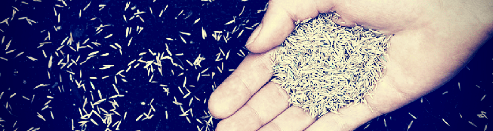

Chi Siamo
Gli Inizi
L’attività iniziale, partita nel 1995, ha riguardato attività abilitanti relative a terapie cognitive e cognitivo — comportamentali a favore di circa venti disabili, ed é stata realizzata prima, presso i locali della sede sociale in via Marchese a Bianco (R.C.), e successivamente, presso una struttura di proprietà comunale, concessa in comodato d’uso. Ad opera degli stessi professionisti, soci fondatori, viene organizzato nell’Aprile del 1995 un convegno provinciale sui problemi dei disabili, dal titolo "HANDICAP E RIABILITAZIONE" prospettive e possibilità di recupero".

Nello stesso anno i progettisti dell’associazione hanno prestato la loro opera per redigere dei progetti ai sensi delle leggi in vigore per conto dei comuni di Locri e di Bianco. La Società é stata affidataria, da parte del comune di Locri, di un progetto sperimentale denominato "PAIDEIA" per la prevenzione delle tossicodipendenze. Tale progetto, il cui finanziamento é stato ottenuto ai sensi dell’art. 127 DPR del 9/10/90 n° 309 ha visto coinvolto anche il SERT dell’A.S. n° 9. Significativi apprezzamenti sono stati attribuiti dai capi d’Istituto delle scuole del comune di Locri per la buona riuscita dell’intervento che si é concluso con un pubblico dibattito sulle droghe. Per saperne di piu' visita LE NOSTRE ATTIVITA' ↓
I nostri valori
Il valore cardine a cui sono ispirati tutti i servizi della Coop. Medical & Psychology è la centralità della persona, il che significa, con riferimento ai diritti universali dell’uomo, il riconoscimento della persona come soggetto portatore di diritti e di doveri in quanto essere umano.
In quest’ottica, la relazione di aiuto si costruisce nell’accoglienza, nel rispetto dell’unicità delle storie, nella solidarietà.
I servizi alla persona svolgono una funzione educativa ponendo la persona al centro della progettazione e della realizzazione delle attività di servizio, con la consapevolezza che il benessere individuale non può essere disgiunto dal sistema di relazioni primarie, parentali e comunitarie in cui la persona è inserita.
L’organizzazione dei servizi è coerente con la finalità espressa nello Statuto della Coop. Medical & Psychology e con la sua storia.
Questo significa investire e ottimizzare le risorse in attività che garantiscano il benessere e la dignità della persona in un’ottica di sostenibilità e coerenza tra risorse economiche e qualità dei servizi offerti, sia in termini di efficienza sia in termini di efficacia.
L'attività di monitoraggio del lavoro svolto e la valutazione della qualità dei servizi offerti costituiscono un elemento fondamentale che qualifica l’approccio della Coop. Medical & Psychology nello svolgimento delle proprie iniziative di utilità sociale.
La consapevolezza della dimensione relazionale e di reciproca interdipendenza che intercorre tra i destinatari dei servizi e l’efficacia dei servizi stessi si traduce nella necessità di approcci personalizzati, multidimensionali e pluridisciplinari in grado di assicurare la continuità degli interventi e l’integrazione delle professioni che operano a servizio delle persone.
Gli operatori, ognuno per la specificità professionale che gli è propria, perseguono con responsabilità le finalità della Coop. Medical & Psychology, in un’ottica di collaborazione, di condivisione delle decisioni e di partecipazione. La professionalità e la competenza degli operatori, intese sia come conoscenze tecniche specifiche sia come capacità individuali socio-relazionali affinate con l’esperienza, vengono sviluppate attraverso percorsi di aggiornamento e formazione che richiedono adeguati investimenti e tempi dedicati.